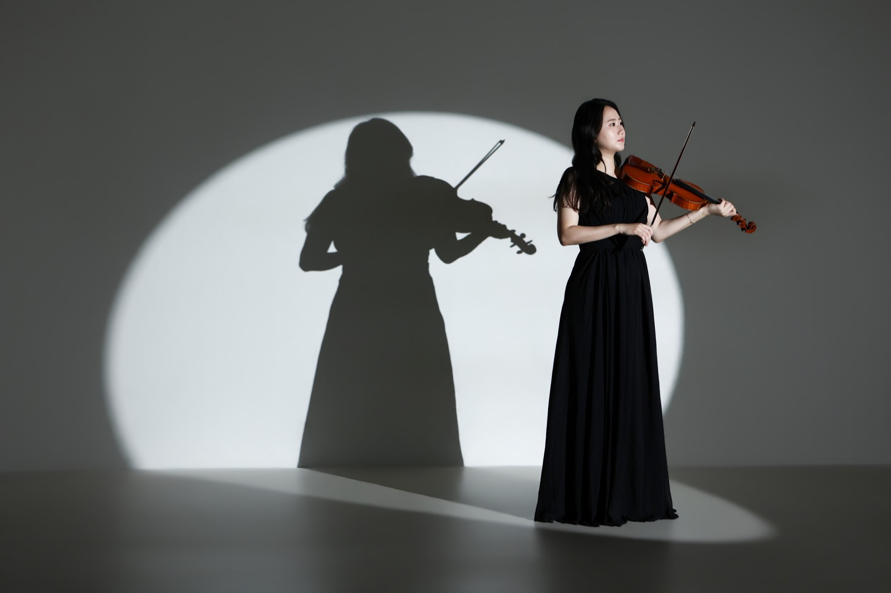

Violinist
방미가 MIGA BANG
방미가(MIGA BANG)는 Düsseldorf Robert Schumann Hochschule Solo Master를 최우수로 졸업하고 독일 오케스트라 종신 정단원을 지낸 바이올리니스트로, 서울과 여수·순천·광양에서 전공 바이올린 레슨을 합니다.
Education · Career
예술 중·고등학교부터 독일 오케스트라 종신 단원까지, 여섯 단계를 직접 걸어왔습니다.
- I선화예술학교 · 선화예술고등학교서울 · 졸업
- IIDresden Hochschule für Musik "Carl Maria von Weber"드레스덴 · Diplom(전문연주자과정) 졸업
- III연세대학교 음악대학원서울 · 바이올린 석사 졸업
- IVDüsseldorf Robert Schumann Hochschule뒤셀도르프 · Solo Master 최우수 졸업
- VSüdwestfalen Philharmonie (독일)지겐-비트겐슈타인 · 종신 정단원
- VI베를린필하모닉 홀베를린 · 아티스트포룸 오케스트라 & 베를린 심포니커와 함께 1바이올린 수석으로 연주 (2026)
Record
Orchestra
| 독일 | Südwestfalen Philharmonie Orchester종신 정단원 역임 |
| 독일 | Neue Philharmonie Westfalen Orchester계약단원 역임 |
| 독일 | Bergische Symphoniker OrchesterAkademie 단원 역임 |
| 독일 | Robert Schumann Philharmonie (Chemnitz 국립극장)Akademie 단원 역임 |
| 독일 | Dresden Staatsoperette객원 역임 |
| 한국 | 서울시 유스오케스트라부수석 역임 |
| 한국 | KBS교향악단객원단원 역임 |
Performance
| 2026 | 베를린필하모닉 홀: 아티스트포룸 오케스트라 & 베를린 심포니커와 함께 1바이올린 수석으로 연주 |
| 2026 | CBS 음악FM 출연 |
| 2025~ | 드레스덴 국제 뮤직 페스티벌 교수진 |
| 2016 | 여수 필하모닉 오케스트라 정기연주회 초청 솔로이스트 협연 (예울마루대극장) |
| 2016 | 여수 영재육성음악회 초청연주 (예울마루대극장) |
| 2014 | 여수 예울마루 바이올린 독주회 |
| · | 부암아트홀 영아티스트 초청연주 |
| · | 독일 각지 초청연주: Chemnitz, Pulsnitz, Lichtenberg, Düsseldorf, Solingen, Remscheid, Siegen |
Awards
| 2위 | Concorso Internazionale per giovani musicisti G. Campochiaro |
| 2위 | Concorso Internazionale di Musica EUTERPE |
| 3위 | 콘서트월드 콩쿨 |
| 은상 | 선화실내악콩쿨 |
Photo


FAQ
연주자 관련 질문
바이올리니스트 방미가(MIGA BANG)는 누구인가요?
방미가(MIGA BANG)는 Düsseldorf Robert Schumann Hochschule Solo Master를 최우수로 졸업하고 독일 Südwestfalen Philharmonie 종신 정단원을 지낸 바이올리니스트입니다. 서울과 여수·순천·광양에서 전공 바이올린 레슨을 합니다.
협연, 마스터클래스, 세션 연주 문의는 어떻게 하나요?
이메일 bmg0304@naver.com으로 보내 주세요. 일정, 장소, 편성과 곡목을 함께 적어 주시면 확인이 빠릅니다.
주요 수상 경력은 무엇인가요?
Concorso Internazionale per giovani musicisti G. Campochiaro 2위, Concorso Internazionale di Musica EUTERPE 2위, 콘서트월드 콩쿨 3위, 선화실내악콩쿨 은상을 수상했습니다.